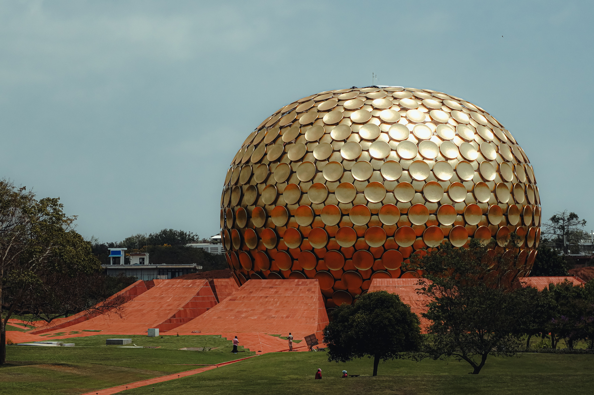
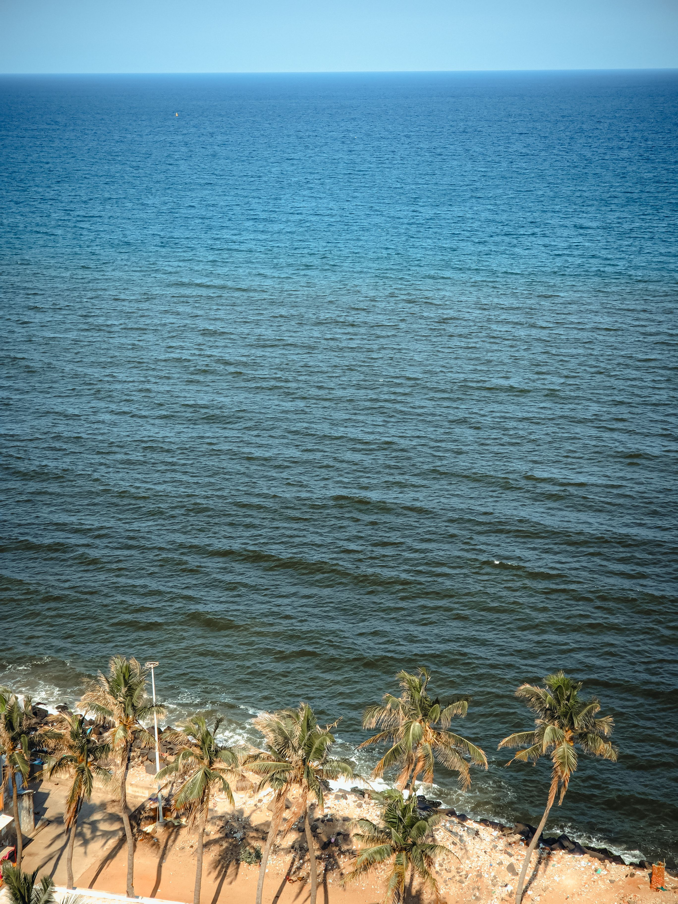
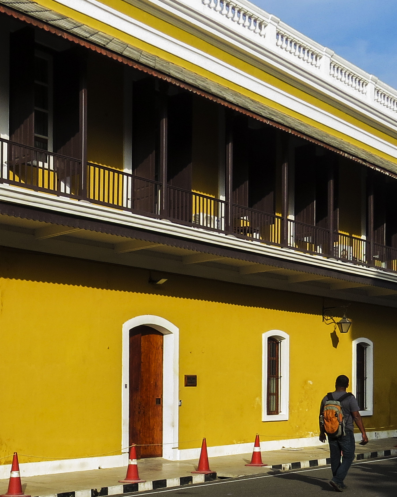
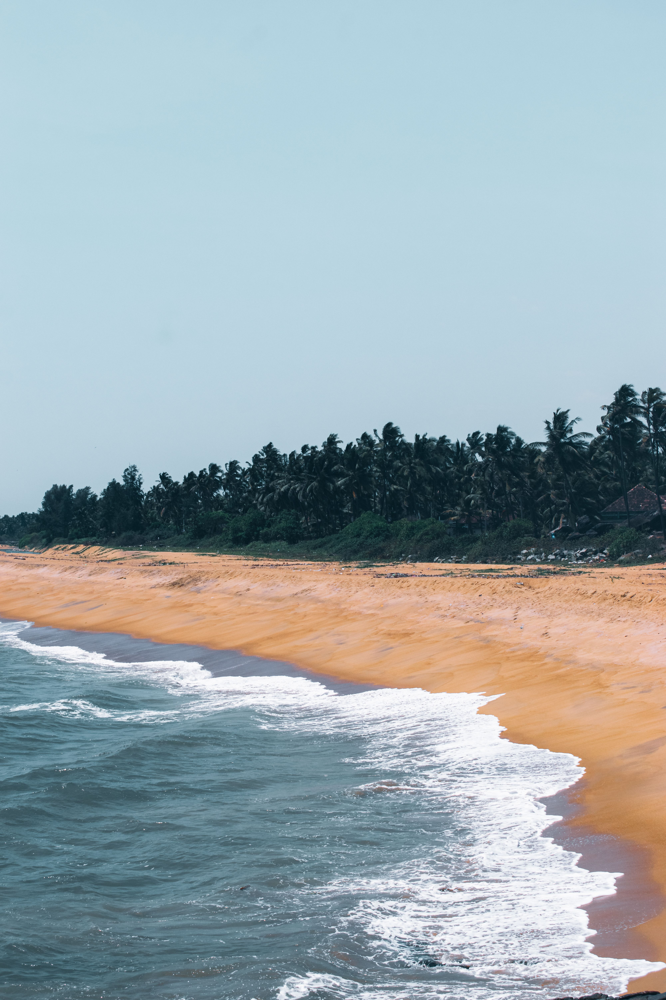
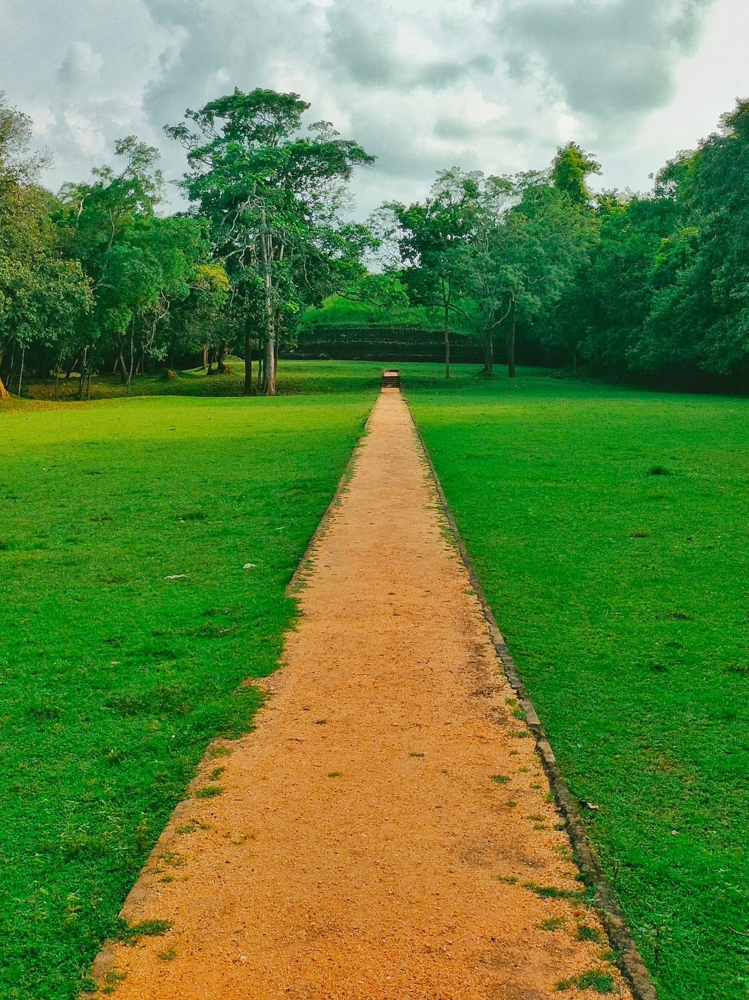
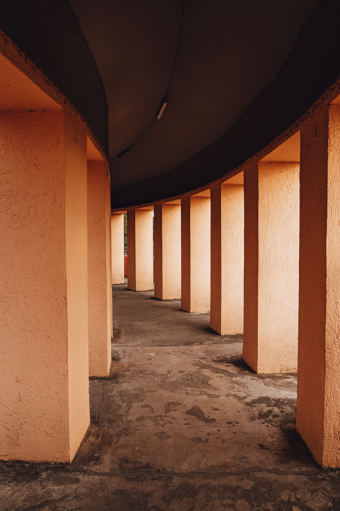
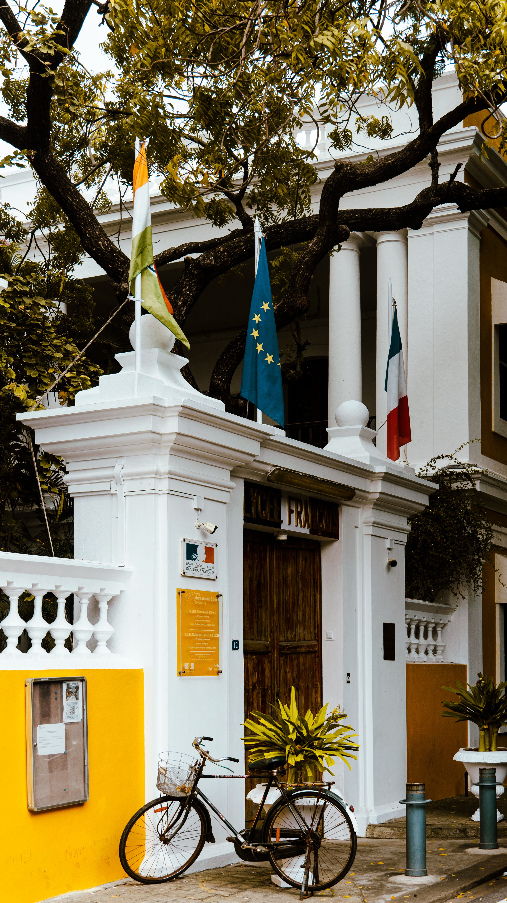

The Human Experiment
What if another way of living is possible?
discover this experience

What happens when people from around the world come together to imagine a different way of living? Over three days, we explore Auroville, Sadhana Forest, and Pondicherry by cycle, discovering communities built on sustainability, connection, and shared ideas. Moving at a slower pace, we experience not just the places themselves, but the conversations, stories, and perspectives that make this one of humanity's most fascinating living experiments.
View Journey Details
3D / 2N
Any
Easy
Auroville
Auroville
Open for Booking
Rs. 24,000
Cycling
18+
Cycle / Electric Cycle
Private Room

Over three days, we explore the landscapes, communities, and stories that make Auroville and Pondicherry unlike anywhere else in India. From forest trails and sustainability projects to heritage boulevards and coastal roads, every ride offers a new perspective.
Today, we enter Auroville, a place created with a bold vision of human unity and sustainable living. Cycling through shaded forest roads and community pathways, we'll discover how barren land was transformed into thriving green spaces. Along the way, we'll visit local initiatives, artisan spaces, and gathering places that reflect Auroville's unique spirit. More than a destination, Auroville is an ongoing experiment, and today we become part of its story.
Distance: 20 km
This morning, we ride to Sadhana Forest, where a community of volunteers has spent years restoring the land through reforestation and water conservation. Here, we'll learn how simple actions can regenerate entire ecosystems and support local communities. The journey continues through rural Tamil villages and countryside roads, offering a glimpse into everyday life beyond the tourist trail. By day's end, the landscape tells a powerful story of resilience, cooperation, and hope.
Distance: 35 km
Our final ride takes us to Pondicherry, where French colonial heritage meets Tamil culture along tree-lined boulevards and coastal promenades. We'll explore quiet streets, historic architecture, vibrant neighborhoods, and the rhythm of everyday life that defines this seaside town. As we ride back towards Auroville, the journey comes full circle, connecting the ideals of the future with the stories of the past.
Distance: 30 km






The Event Terms and Conditions detailed below apply to all participants of 'The Human Experiment' as well as attendees or participants (herein after called "Participant") participating in any of Cycle Culture's ("organizer", "we", "us", "our") cycling events.
By registering for this event, you agree to abide by all terms and conditions set forth below.
Participants must complete the registration process and pay the full event fee to secure their spot.
All participants must be at least 18 years of age at the time of the event. Those under 18 must be accompanied by a parent or legal guardian.
The organizer reserves the right to refuse entry to any participant who does not meet the requirements or fails to provide necessary documentation.
Participants will be provided with cycles (standard or electric) and basic safety gear including helmets.
Helmets are mandatory for all participants during cycling activities. Participants are encouraged to bring personal cycling gloves and attire for comfort.
The organizer is not responsible for any damage to personal equipment during the event.
Participants should be comfortable with easy-to-moderate cycling (20–35 km per day) with plenty of stops along the way.
Participants with pre-existing medical conditions must consult their physician before participating and inform the event organizers.
The organizer reserves the right to remove any participant from activities if they appear to be physically unable to continue or pose a risk to themselves or others.
Participants must respect the unique community ethos of Auroville, Sadhana Forest, and Pondicherry, including local customs and traditions.
Appropriate attire is required when visiting community spaces and heritage sites. Photography restrictions at certain locations must be observed.
We follow "Leave No Trace" principles — please carry back any waste and respect the natural environment.
Cancellations made more than 10 days prior to the event will receive a full refund.
Cancellations made 0–10 days prior will not receive any refund.
No refunds will be issued for cancellations made less than 10 days before the event.
The organizer reserves the right to cancel the event due to unforeseen circumstances (extreme weather, road closures, etc.). In such cases, participants will receive a full refund or option to reschedule.
A little rain is part of the adventure. Our rides and experiences continue in light to moderate rain with suitable rain gear. In cases of extreme weather where safety may be affected, the trip may be postponed or cancelled at our discretion.
By participating, each participant acknowledges the inherent risks associated with cycling and outdoor activities and agrees to participate at their own risk. Cycle Culture and its guides shall not be held liable for any injury, loss, damage, or expense arising from participation in the experience.
Participants are responsible for any significant damage to cycles, equipment, or property during the experience. Normal wear and tear and minor repairs are excluded. Repair or replacement costs arising from such damage may be charged to the participant.
A detailed liability waiver must be signed before the start of the tour.